pt cm
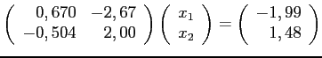
qui a été résolu au numéro neuf du laboratoire un. Considérons aussi les solutions approximatives
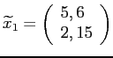
et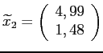
.
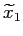
, on obtient avec une mantisse à 6 chiffres, mais stocké en mantisse à 3 chiffres
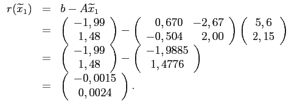
Pour
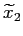
, on obtient avec une mantisse à 6 chiffres, mais stocké en mantisse à 3 chiffres
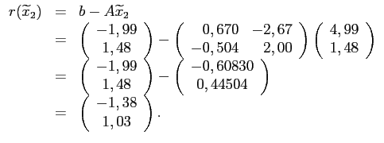
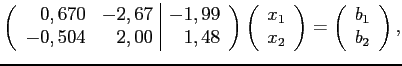
on effectuait l'opération
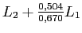
, ce qui revient, à 4 chiffres significatifs, à faire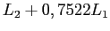
. On obtient alors :
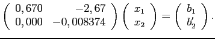
On trouve alors
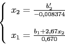
Posons
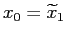
, on doit calculer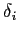
tel que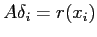
, puis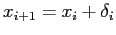
pour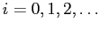
On a
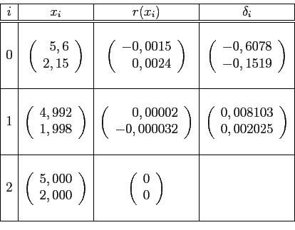
Posons maintenant
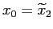
. On obtient :
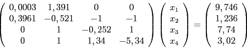
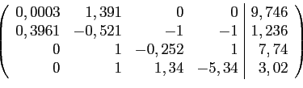
on obtient la matrice augmentée
Si on y applique une phase ascendante de résolution, on obtient :
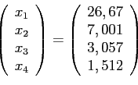
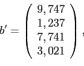
on obtient la matrice augmentée échelonnée
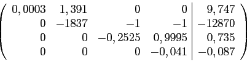
d'où la solution :
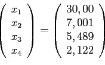
Pour
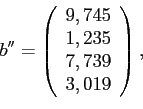
on obtient la matrice augmentée échelonnée
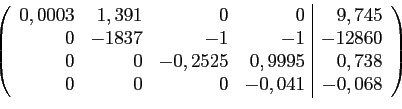
d'où la solution :
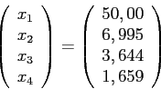
Comme les solutions varient beaucoup pour de petites variations du vecteur des constantes, on en déduit que les solutions ne sont pas très fiables.
on obtient la matrice augmentée
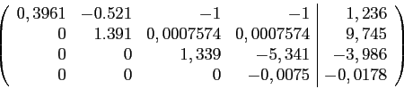
Si on y applique une phase ascendante de résolution, on obtient :
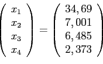
Pour on obtient la matrice augmentée échelonnée
d'où la solution :
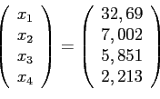
Pour on obtient la matrice augmentée échelonnée
d'où la solution :
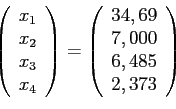
Comme les solutions varient beaucoup pour de petites variations du vecteur des constantes, on en déduit que les solutions ne sont pas très fiables.
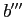
le vecteur formé de la somme des colonnes de la matrice et du vecteur des constantes. On a, à 4 chiffres significatifs, que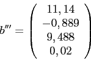
Après application de l'algorithme de Gauss sans pivot à la matrice augmentée
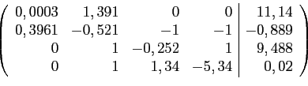
on obtient la matrice augmentée
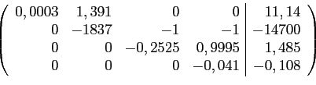
Si on y applique une phase ascendante de résolution, on obtient :
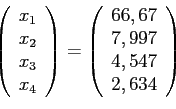
Après application de l'algorithme de Gauss avec pivot partiel à la matrice augmentée
on obtient la matrice augmentée
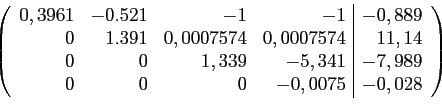
Si on y applique une phase ascendante de résolution, on obtient :
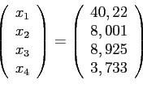
Comme les solutions varient beaucoup au changement de méthode, on en déduit que les solutions ne sont pas très fiables.
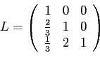
et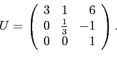
Après une phase descendante pour résoudre
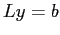
, on a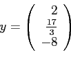
et après une phase ascendante pour résoudre
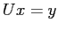
, on obtient la solution finale qui est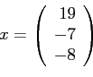
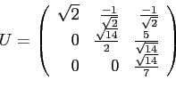
et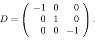
Après une phase descendante de résolution pour le système
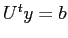
, on a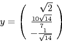
Après une phase ascendante de résolution pour le système
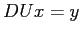
, on a
et
d'où